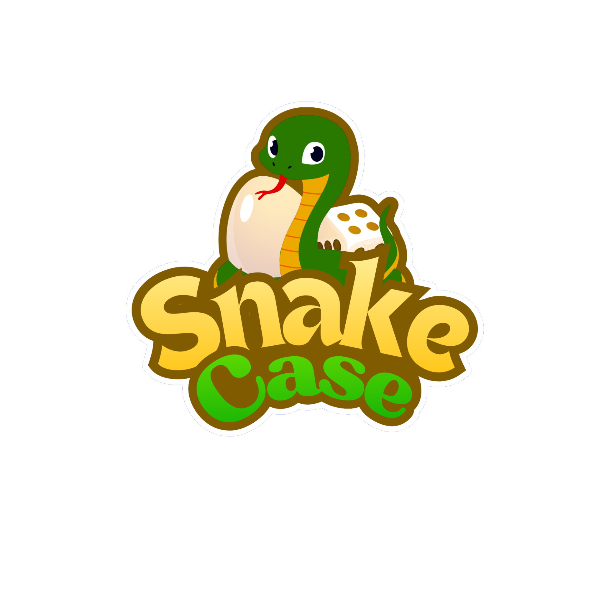
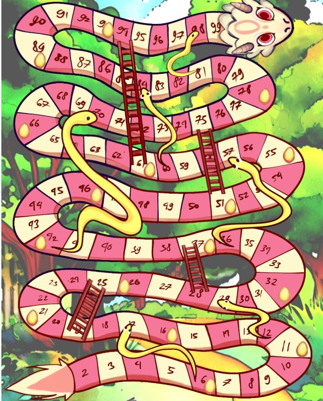

Profil Snake Case

Snake Case merupakan board game yang dirancang oleh siswi kelas X PPLG 3 SMK Telkom Bandung. Permainan ini menggabungkan ular tangga dengan tantangan Truth or Dare sehingga menciptakan pengalaman bermain yang lebih seru, interaktif, dan menghibur. Setiap pemain tidak hanya mengandalkan keburuntungan dari lemparan dadu, tetapi juga harus menyelesaikan tantangan yang diberikan selama permainan berlangsung. Dengan konsep yang unik dan menyenangkan, Snake Case menjadi pilihan yang sempurna untuk menghabiskan waktu bersama keluarga dan teman-teman.
Board game Snake Case dibuat dengan tujuan untuk menciptakan hiburan yang menarik sekaligus melatih keberanian dan kemampuan komunikasi pemain. Melalu permainan ini, pemain dapat berinteraksi secara langsung, meningkatkan rasa percaya diri, mempererat hubungan sosial, serta mengurangi ketergantungan terhadap permainan digital. Dengan desain yang menarik dan aturan yang mudah dipahami, Snake Case cocok untuk semua kalangan usia, menjadikannya pilihan ideal untuk berbagai kesempatan, seperti kumpul keluarga, atau sekadar bersantai bersama teman-teman.
1. Seluruh pemain menentukan giliran bermain. 2. Pemain melempar dadu sesuia giliran hingga menghasilkan angka satu. 3. Pemain yang mendapatkan angka satu pada dadu dapat maju lebih dulu. 4. Pemain melempar dadu kemudian menjalankan pion sesuai angka yang keluar pada dadu hingga menemukan pemenang.
1. Jika pemain mendarat di kotak berisi telur, pemain harus mengambil kartu tantangan dan menyelesaikan tantangan tersebut. 2. Jika pion mendarat di kotak berisi tangga maka harus naik. 3. Jika pion mendarat di kotak berisi kepala ular maka harus turun. 4. Pemain pertama yang mencapai kota terakhir adalah pemenangnya.
Snake Case memiliki beberapa keunggulan yang membuatnya berbeda dari board game lainnya. Pertama, kombinasi antara ular tangga dan tantangan Truth or Dare menciptakan pengalaman bermain yang unik dan menarik. Kedua, permainan ini dirancang untuk melatih keberanian dan rasa percaya diri. Ketiga, Snake Case cocok untuk semua kalangan usia, menjadikannya pilihan yang ideal untuk berbagai kesempatan.
Snake Case ditujukan untuk remaja dan anak-anak yang menyukai permainan kelompok. Board game ini dapat dimainkan bersama teman, keluarga, maupun saat kegiatan sekolah sehingga menciptakan suasana yang menyenangkan dan interaktif.
Melalui permainan Snake Case, pemain dapat melatih keberanian berbicara di depan orang lain, meningkatkan kemampuan bersosialisasi, membangun rasa percaya diri, serta belajar bekerja sama dalam suasana yang menyenangkan. Selain itu, permainan ini juga dapat menjadi sarana untuk mengurangi stres dan meningkatkan kebahagiaan melalui interaksi sosial yang positif. Dengan berbagai manfaat tersebut, Snake Case tidak hanya memberikan hiburan tetapi juga kontribusi positif bagi perkembangan pribadi pemainnya.
Snake Case merupakan inovasi board game yang menggabungkan permainan ular tangga dengan konsep truth or dare. Permainan ini tidak hanya memberikan hiburan, tetapi juga membantu meningkatkan keberanian, komunikasi, dan interaksi sosial antar pemain. Dengan desain yang menarik dan aturan yang sederhana, Snake Case dapat menjadi alternatif permainan yang menyenangkan untuk berbagai kalangan.

Berikut adalah hasil visualisasi board game Snake Case yang telah kami buat. Desain ini mencerminkan konsep permainan yang seru dan interaktif, dengan elemen-elemen yang menarik untuk meningkatkan pengalaman bermain. Kami berharap visualisasi ini dapat memberikan gambaran yang jelas tentang bagaimana board game Snake Case akan terlihat dan memberikan inspirasi bagi para pemain untuk menikmati permainan ini bersama keluarga dan teman-teman mereka.